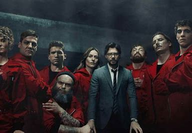
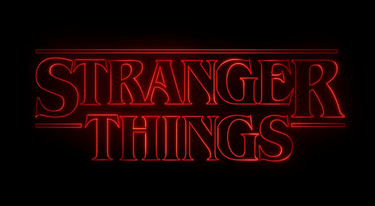

Money Heist (Spanish: La casa de papel, [la ˈkasa ðe paˈpel], lit. 'The House of Paper') is a Spanish heist crime drama television series created by Álex Pina. The series traces two long-prepared heists led by the Professor (Álvaro Morte),one on the Royal Mint of Spain, and one on the Bank of Spain, told from the perspective of one of the robbers, Tokyo (Úrsula Corberó). The narrative is told in a real-time-like fashion and relies on flashbacks,time-jumps, hidden character motivations, and an unreliable narrator for complexity.
Stranger Things is an American science fiction drama television series created by the Duffer Brothers, who also serve as showrunners and are executive producers along with Shawn Levy and Dan Cohen. Its first season was released on Netflix on July 15, 2016. In February 2022, the series was renewed for a fifth and final season.
The Blacklist is an American crime thriller television series that premiered on NBC on September 23, 2013. The show follows Raymond "Red" Reddington (James Spader), a former U.S. Navy officer turned high-profile criminal who voluntarily surrenders to the FBI after eluding capture for decades. He tells the FBI that he has a list of the most dangerous criminals in the world which he has compiled over the years, and he is willing to inform on their operations in exchange for immunity from prosecution. Additionally, he insists on working exclusively with rookie FBI criminal profiler Elizabeth Keen (Megan Boone).
| Series | Seasons | Episodes |
|---|---|---|
| Money Heist | 5 | 41 |
| Stranger Things | 4 | 34 |
| The Blacklist | 9 | 162 |